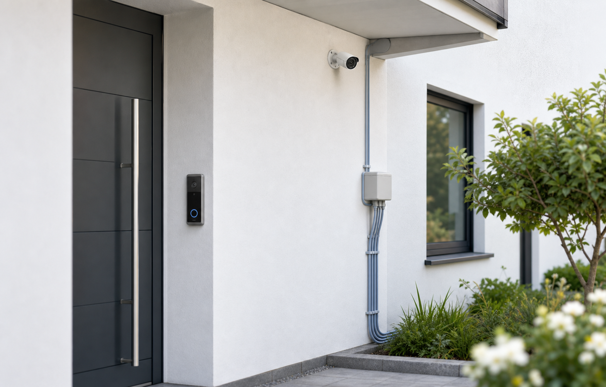

PoE · Doorbell · Kameras
Netzwerk für Doorbell und Kameras.
Doorbell und Kameras brauchen stabile Verbindung. Beratung & Technik plant PoE-Switch, Netzwerkpunkte und Einbindung ins Heimnetz. Elektro- und Montagearbeiten erfolgen durch Elektriker oder Partner.
Smart-Security-Netzwerk anfragenStabile Basis
Doorbell und Kameras brauchen mehr als WLAN-Hoffnung.
Für Eingangsbereich, Einfahrt, Garage und Garten wird die Netzwerkanbindung früh geplant. PoE, Switch, Leitungswege und Montagepunkte werden mit Elektriker oder Partnerbetrieb abgestimmt.
PoE erklären
Power over Ethernet kann Daten und Strom über ein Netzwerkkabel liefern, wenn Geräte und Switch dafür geeignet sind.
Standorte planen
Eingangsbereich, Einfahrt, Garage, Garten und Technikraum werden in die Netzplanung einbezogen.
System einbinden
UniFi Protect oder andere Systeme werden nur eingesetzt, wenn sie zum Projekt passen.
Doorbell und Kameras nicht als Funk-Zufall planen.
Eine stabile Netzwerkbasis reduziert Ausfälle und Nacharbeit.
CONNECT SMART SECURITY anfragen